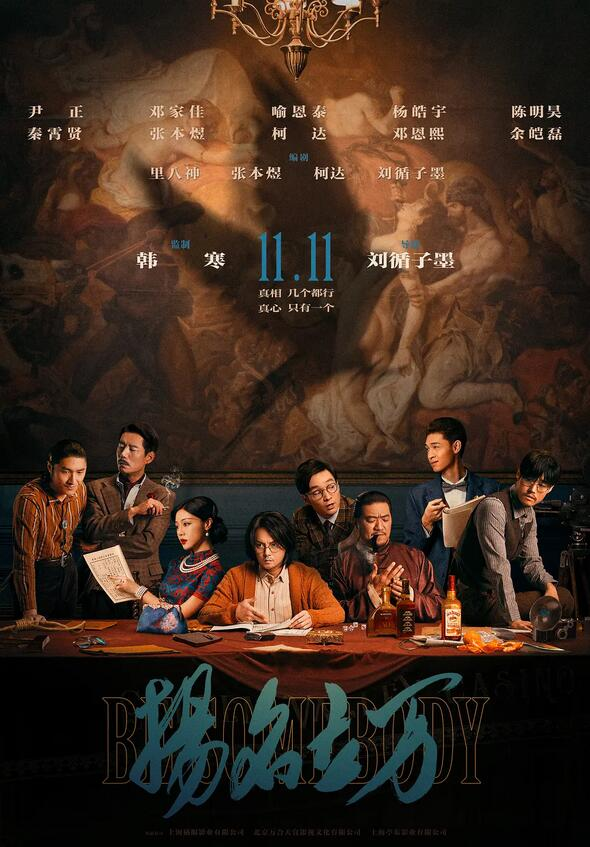

人类为抵御小行星的撞击，拯救地球，在月球部署了月盾计划。陨石提前来袭，全员紧急撤离时，维修工独孤月（沈腾 饰）因为意外，错过了领队马蓝星（马丽 饰）的撤离通知，一个人落在了月球。不料月盾计划失败，独孤月成为了“宇宙最后的人类”，开始了他在月球上破罐子破摔的生活……
独行月球
6.9
连环命案、私刑执法、预告杀人、以暴制暴...一群号称“神探”的团伙掀起了一场香港有史以来最邪恶的犯罪！患有精神疾病的“癫佬神探”李俊（刘青云 饰）为查真凶独闯犯罪现场！以“神探夫妇”陈仪（蔡卓妍 饰）和方礼信（林峯 饰）为首的重案组也开启了与杀戮赛跑的缉凶之路！敌友之间，正邪边缘，死亡审判的真相究竟是什么？真正的“神探”到底是谁？
神探大战
7.0
首尔重案组马队长（马东锡 饰）远赴越南引渡自首韩国疑犯，几经拷问下查出背后庞大的绑架阴谋，幕后黑手正是专门绑架韩国旅客的癫丧残暴杀手姜海尚（孙锡久 饰）。霸气野兽刑警马队长不惜狂追猛打，由韩国打到越南，连环使出招牌「一拳KO」，对抗刀刀要命的姜海尚，誓以极拳执法将罪犯清零！
犯罪都市2
7.6
55岁的美国华裔移民伊芙琳（杨紫琼 饰）家庭事业两崩溃。在老父亲生日大寿这天，除了要阻止女儿（许玮伦 饰）暴走出柜、替无用丈夫（关继威 饰）擦屁股，还得去税务局向古板大婶（杰米·李·柯蒂斯 饰）解释不太妙的税务问题。才踏进大楼电梯，软烂丈夫竟摇身一变演起黑客帝国，声称自己是另一个宇宙的版本，而秀莲也是千万宇宙里的其中一个。还来不及理解，邪恶势力已在多元宇宙中蔓延，世界即将毁灭，只有在这个宇宙里，“一无是处”的伊芙琳才能拯救世界……
妈的多重宇宙
7.6
月黑风高之夜，一群电影人被秘密召集到一起，欲将轰动一时的血案翻拍成电影，借此扬名立万。殊不知他们正身处案发现场，并步步陷入一个巨大迷局之中，而凶手就在他们中间……
伴随着利欲熏天的创作风暴，案件背后的故事似乎也更加扑朔迷离，戏中戏、案中案、局中局、人外人，环环相扣，一场野心与良心的较量愈演愈烈。究竟是命悬一线，还是另有惊天逆转？爱与温暖的血色花又能否从快将干涸的血河中终极绽放？一切都有待揭开。

扬名立万
7.4
遗憾的是，我爱你，只敢以朋友之名——你曾有过差一点就在一起的爱情吗？来自小城的许一（李孝谦 饰）和高晓楠（漆昱辰 饰）童年由于误会而留下遗憾, 后来两人在大学重逢. 就此产生了跨越多年的羁绊。许一、高晓楠在相处中解开当年的心结，从冤家到挚交，从青涩学生到职场新人，相互陪伴,一起成长，不是情侣却胜似情侣。然而, 彼此间不敢触碰的感情界线因为一次意外终于彻底爆发...这一次, 许一和高晓楠的关系能否发生转变? 他们之间会是错过还是圆满？
我们的样子像极了爱情
暂无